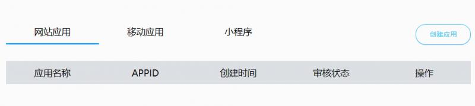
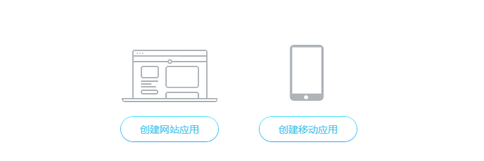
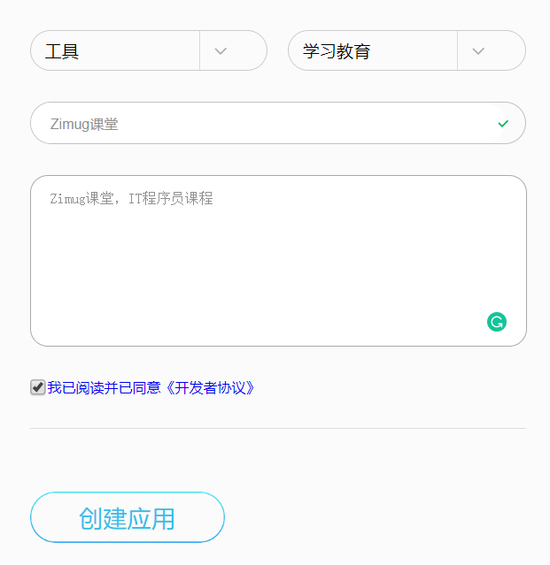
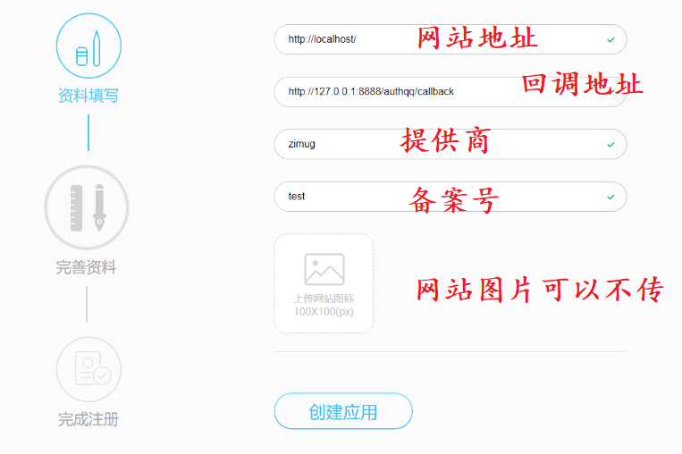
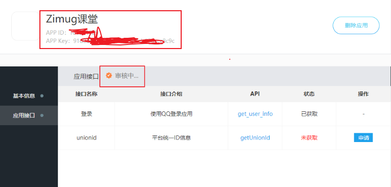

本文主要说明一下开发者如何在QQ互联创建测试应用，从而分配给我们一套APP ID和APP KEY，在我们平时学习的时候使用。
要想使用QQ登陆的功能，首先你必须是腾讯开发者。腾讯搞了一大堆的开放平台，有点乱。如果你还不是腾讯开发者，先去QQ互联网站https://connect.qq.com注册一下开发者。
以上所填信息真实完整，通常1个工作日即可审核完成，审核结果通过邮件通知。审核之后才能创建应用。下面的状态是开发者资格审核中的状态。
注意：本文旨在教大家如何创建一个QQ互联的测试应用，目的是为了学习。所有的填的内容都是以满足本地测试为目的。如果你真的需要为一个生产环境开发QQ互联登录动能，请先准备好如下内容：
下面我们开始申请，如果您和我一样就是创建一个测试应用，我们什么也不用准备，现在就开始吧。但是测试账号只能使用当前的创建应用的QQ用户进行登录相关测试，这对我们来说就已经足够了。
在开发者资格审核通过之后，再次登录QQ互联网站，创建网站应用。

弹出框内选择创建网站应用

创建应用的应用名称和应用简介，随便填写一下即可，最后结果：审核不通过。但是不耽误我们测试使用。

最重要的是填写网站域名和回调地址，其他两项随便填。

填写完成之后等待审核。已经为我们分配了APP ID 和 APP KEY。并且获取了QQ登录接口的权限。

完成开发者注册和应用创建之后，我们就可以使用APP ID和APP Key搭建本地环境，开发QQ登录代码。
在进行网站QQ登录功能开发之前，建议开发者一定要仔细阅读该文档：QQ互联网站接入流程 ，这样在我们后续的开发中才能更顺畅。